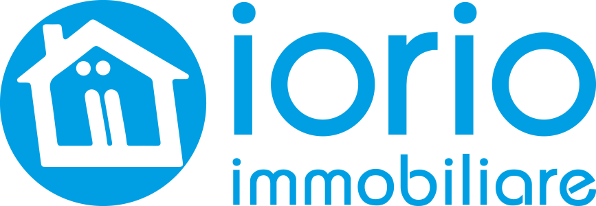

Ecco perché ogni agente immobiliare ha bisogno di un software antiriciclaggio!
Hai un’agenzia immobiliare? Sei sicuro che le tue pratiche siano completamente a posto, nei minimi dettagli? Le leggi incombono, e prevedono sanzioni molto aspre, che vanno da un minimo di 2000 euro per ogni pratica! I controlli delle forze dell’ordine sono alle porte, e stanno diventando sempre più frequenti.
Questa è l’esperienza di Giacomo Iorio, titolare della “Iorio Immobiliare” di Santa Maria Capua Vetere (Caserta).
Giacomo ci ha raccontato quanto è accaduto nello scorso mese. Una pattuglia della Guardia di Finanza ha fatto ingresso nel suo ufficio. Hanno richiesto in maniera ferma e decisa di effettuare dei controlli all’interno dell’attività commerciale, che è stata ispezionata nei minimi dettagli, così come la persona di Giacomo.
Giacomo, raccontaci com’è andata.
Ero fuori dal mio ufficio, in un momento di pausa. D’un tratto degli operatori della Guardia di Finanza bussano alla mia porta, per fare un controllo. Li faccio accomodare e mi presto alle loro richieste.
Ciò che Giacomo non immaginava era quanto potesse essere minuziosa, approfondita e fiscale l’ispezione dei finanzieri.
Gli operatori hanno innanzitutto verificato chi era presente al momento dell’accesso, dunque le mie collaboratrici e me. D’un tratto, le loro richieste si sono trasformate in una lista lunghissima di parametri da rispettare e di cose da controllare: visura camerale, buste paga, l’iscrizione all’elenco degli agenti immobiliari, contratti di collaborazione con i collaboratori a partita iva, e tutto ciò che riguarda i collaboratori. E non finisce qui.
Si spieghi meglio: cos’altro hanno richiesto?
Erano davvero molto qualificati, intransigenti, precisissimi: mi hanno chiesto i contratti di conferimento di incarico, copie degli assegni e altri titoli, contratti preliminari di compravendita, dichiarazioni dei clienti, adeguata verifica. Poi, la tracciabilità degli assegni per ogni pratica, il sistema di conservazione dei dati e delle informazioni acquisite ai fini della norma antiriciclaggio, fatture emesse, modalità di pagamento delle stesse. Sull’antiriciclaggio poi, sapevano che il registro della clientela era stato abolito e siamo passati direttamente alla verifica della clientela. Mi hanno chiesto persino se ci fossero, presenza di titolari effettivi, esecutori, soggetti politicamente esposti e differenza di registrazione tra società e persone fisiche. Praticamente: tutto!
Una situazione che ha destabilizzato notevolmente Giacomo, provato da tanti controlli, e notevolmente preso dall’agitazione per quanto stesse accadendo.
Hanno chiesto di individuare un armadio in cui potessi chiudere tutte le pratiche, e lo hanno sigillato. Da allora, sono iniziate le verifiche giornaliere, ogni giorno allo stesso orario, per nove lunghissimi giorni. Non ho dormito per diverse notti, ho provato un’incredibile ansia, anche se era tutto a posto, anche perché amici, parenti e consulenti sostenevano che era impossibile che la guardia di Finanza andasse via senza fare almeno un verbale. Penso che tutti abbiano bisogno di usare un software. Che, ovviamente, non è tutto, perché poi bisogna saperlo usare secondo le norme di legge, e a dire il vero io in prima persona ci ho lavorato pochissimo, dato che la mia segretaria era in stretto contatto con Teresa del backoffice di Klaggio. Tutte le pratiche erano state elaborate in maniera PERFETTA, e questo ci ha permesso di avere anche i complimenti del Capitano.

Organizzare le tue pratiche antiriciclaggio al meglio in maniera semplice e veloce è possibile.
Klaggio è pensato proprio per te, agente immobiliare che vuoi lavorare in maniera serena. Metti al riparo il tuo lavoro e la tua persona. I controlli si superano con la prevenzione, e con uno staff serio e affidabile che ti guida ogni giorno.